The range of admissible cell shapes in Intrepid is restricted to d-dimensional polytopes, d=1,2,3. A polytope is defined by a set of its vertices 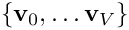 and a base topologyBT that defines how these verices are connected into k-dimensional, k < d facets (k-subcells) of that polytope.
The base topology of any polytope can be extended by augmenting the set of its vertices by an additional set of points 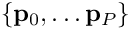. The extended topologyET is defined by specifying the connectivity of the set 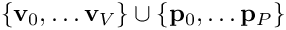 relative to the subcells specified by its base topology BT. The vertices and the extra points are collectively referred to as nodes. Thus, a polytope with extended topologyET is defined by a set of nodes 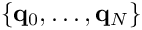, where 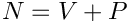, and a connectivity rule for these nodes.
Intrepid requires any cell to have a valid base topology. The nodes of the cell should always be ordered by listing its vertices first, i.e.,
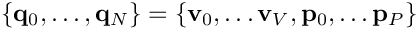
To manage cell topologies Intrepid uses the Shards package http://trilinos.org/packages/shards . Shards provides definitions for a standard set of base and extended cell topologies plus tools to construct custom, user defined cell topologies, such as arbitrary polyhedral cells. For further details see Shards documentation.
Reference cells
For some cell topologies there exist simple, e.g., polynomial, mappings that allow to obtain any cell having that topology as an image of a single "standard" cell. We refer to such standard cells as reference cells.
Just like in the general case, a reference cell with a base topology BT is defined by a set of vertices, and a reference cell with extended topology ET is defined by a set of nodes that include the original vertices and some additional points.
The actual vertex and node coordinates for the reference cells can be chosen arbitrarily; however, once selected they should not be changed because in many cases, e.g., in finite element reconstructions, all calculations are done on a reference cell and then transformed to physical cells by an appropriate pullback (see Section Pullbacks).
In Intrepid base and extended reference cell topologies are defined using the following selections of vertex and node coordinates:
Finite element reconstruction methods based on pullbacks (see Section Pullbacks) are restricted to the above cell topologies.
Reference-to-physical cell mapping
The mapping that takes a given reference cell to a physical cell with the same topology is defined using a nodal Lagrangian basis corresponding to the nodes of the reference cell. In other words, the mapping is constructed using basis functions that are dual to the nodes of the reference cell. Implementation details are as follows.
Assume that 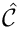 is a reference cell with topology T and nodes 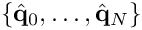, and that 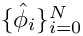 is the Lagrangian basis dual to these nodes, i.e., 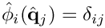. A physical cell with the same topology T as is
then defined as the image of under the mapping
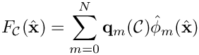
where 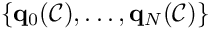 is the set of physical nodes that defines . The number of physical nodes is required to match the number of reference
nodes in the specified cell topology T. The i-th coordinate function of the reference-to-physical mapping is given by
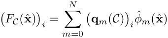
where 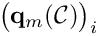 is the i-th spatial coordinate of the m-th node.
For simplicity, unless there's a chance for confusion, the cell symbol will be ommitted from the designations of physical points and reference-to-physical maps, i.e., we shall simply write 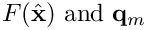.
Parametrization of a given physical k-subcell 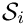, k=1,2, is a map from a k-dimensional parametrization domain R to that subcell:
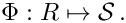
Parametrization domains play role similar to that of reference cells in the sense that they allow computation of line and surface integrals on 1- and 2-subcells (edges and faces) to be reduced to
computation of integrals on R .
Parametrization maps are supported for 1- and 2-subcells (edges and faces) that belong to physical cells with reference cells. The reason is that these maps are defined by the composition of the parametrization maps for reference edges and faces with the mapping F defined in Reference-to-physical cell mapping. As a result, parametrization of a given physical k-subcell requires selection of a parent cell that contains the subcell.
Remarks
Because a given k-subcell may belong to more than one physical cell, its parent cell is not unique. For a single k-subcell the choice of a parent cell is not important, however, when dealing with subcell worksets parent cells must all have the same topology (see Subcell worksets for details about subcell worksets).
Implementation of subcell parametrization is as follows. Assume that is a k-subcell
with parent cell ; is the associated reference cell and i is the local ordinal of the subcell relative to the reference cell. To this physical subcell corresponds a reference subcell 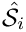 having the same local ordinal. Parametrization of the reference k-subcell is a map from the k-dimensional parametrization domain R to that subcell:
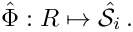
Parametrization of is then defined as
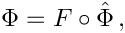
where F is the reference-to-physical mapping between the parent cell and its reference cell.
A 1-subcell (edge) always has Line<N> topology and so, the parametrization domain for edges is the standard 1-cube:
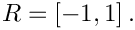
On the other hand, faces of reference cells can have Triangle<N> and/or Quadrilateral<N> topologies. Thus, the parametrization domain for a 2-subcell depends on its topology and is either the standard 2-simplex or the standard 2-cube:
A subcell workset comprises of 1- or 2-subcells and associated parent cells that satisfy the following conditions
all subcells have the same cell topology;
all parent cells have the same cell topology;
The parent cell topology has a reference cell;
relative to that reference cell, all subcells in the workset have the same local ordinal
Therefore, a subcell workset is defined by
collecting a set of 1- or 2-subcells having the same topology
selecting a parent cell for every subcell in such a way that
all parent cells have the same cell topology
all subcells in the workset have the same local ordinal relative to the parent cell topology
Obviously, a subcell can have multiple parent cells. For example, in a mesh consisiting of Triangle<3> cells, every edge is shared by 2 triangle cells. To define an edge workset we can use either one of the two traingles sharing the cell.
Suppose now that the mesh comprises of Triangle<3> and Quadrilateral<4> cells and we want to define an edge workset. Let's say the first few edges in our workset happen to be shared by 2 triangles and so we select one of them as the parent cell. Now suppose the next edge is shared by a traingle and a quadrilateral. Because all parent cells in the workset must have the same cell topology we cannot use the quadrilateral as a parent cell and so we choose the triangle. Finally suppose that one of the candidate edges for our workset is shared by 2 quadrilaterals. Because of the requirement that all parent cells have the same topology, we will have to reject this edge because it does not posses a potential parent cell with the same topology as the rest of the edges in our workset.
A subcell workset is denoted by 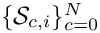, where
c is parent cell ordinal;
i is the local subcell ordinal (relative to the topology of the parent cell) shared by all subcells in the workset.